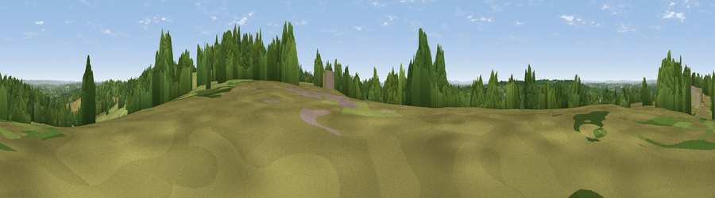

Viewpoint near Upper Hartfield
#32063 in England · top 36% of its area beats it · near Upper Hartfield · open accessWhere it is
The exact computed spot (TQ 46825 31175). Click the marker for map links.
Public access: this spot lies on mapped open-access land (CRoW Act 2000) — you may roam here on foot. Computed from Natural England's CRoW access layer and OpenStreetMap rights of way — not the legal definitive map. Always verify locally.
The view, rendered

A 360° render of this exact spot computed from the terrain model, tree cover and land cover — summer colours, afternoon light, calibrated against photographs of famous viewpoints. Real trees, hedges and buildings will differ in detail.
The panorama
Grey silhouette: terrain skyline in each direction (720 bearings, Earth curvature and refraction included). Dashed green: skyline with trees (+15 m) and buildings (+8 m) as obstacles. Blue strip: how far the ground is visible on each bearing.
Where the view opens
Wedge length = distance to the farthest visible ground on that bearing (vegetation-aware). Rings at 10, 25 and 50 km.
What fills the view
53% grassland · 43% woodland · 3% cropland · 1% built-up
Angular shares of the visible panorama (visual magnitude), not map area. Landscape diversity 0.37 (0–1 Shannon).
Key numbers
More beautiful places nearby
The staircase of upgrades: each row has a higher view potential than everything closer. Driving times are estimates from straight-line distance, calibrated against real road routing — check an actual route before setting out.
| Place | Direction | Drive | Score |
|---|---|---|---|
| Viewpoint near Upper Hartfield | N · 1 km | ~3 min | 59.6 |
| Viewpoint near French Street | N · 20 km | ~34 min | 64.5 |
| Malling Hill | SSW · 20 km | ~34 min | 73.8 |
| Cliffe Hill | S · 21 km | ~35 min | 79.3 |
| Viewpoint near Plumpton | SSW · 21 km | ~35 min | 80.4 |
| Viewpoint near Westmeston | SW · 22 km | ~36 min | 80.9 |
| Ditchling Beacon | SW · 23 km | ~37 min | 81.8 |
| Viewpoint near Firle | S · 25 km | ~41 min | 83.8 |
51.06115, 0.09385 · source: screening · position refined by local search. Computed location — check access rights before visiting.